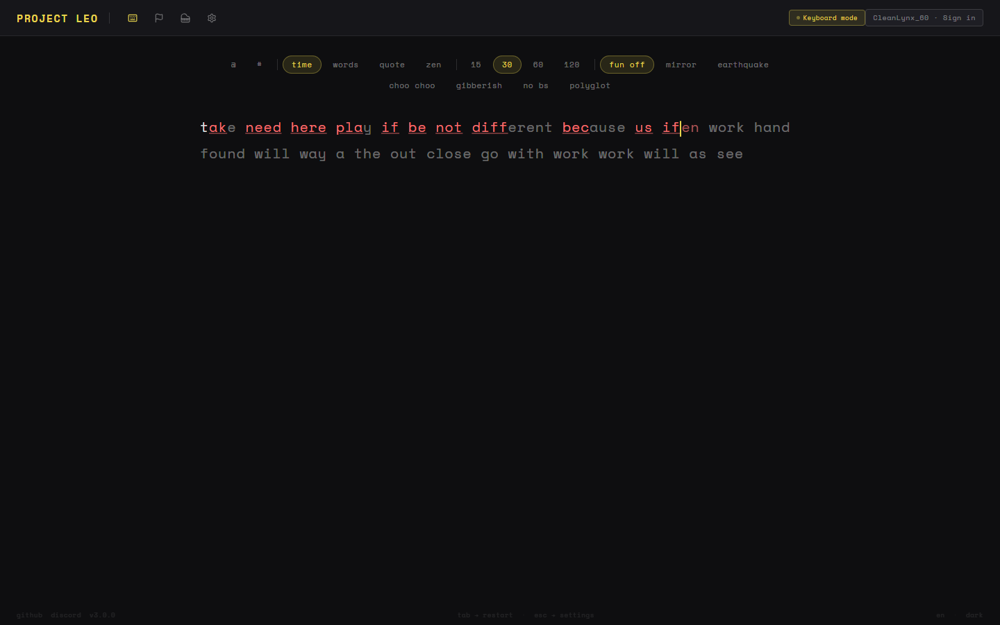
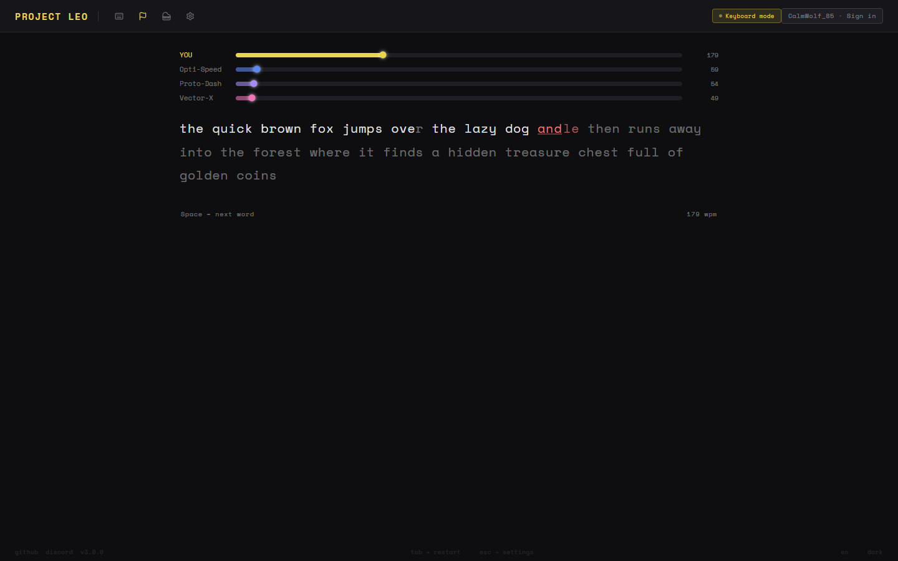
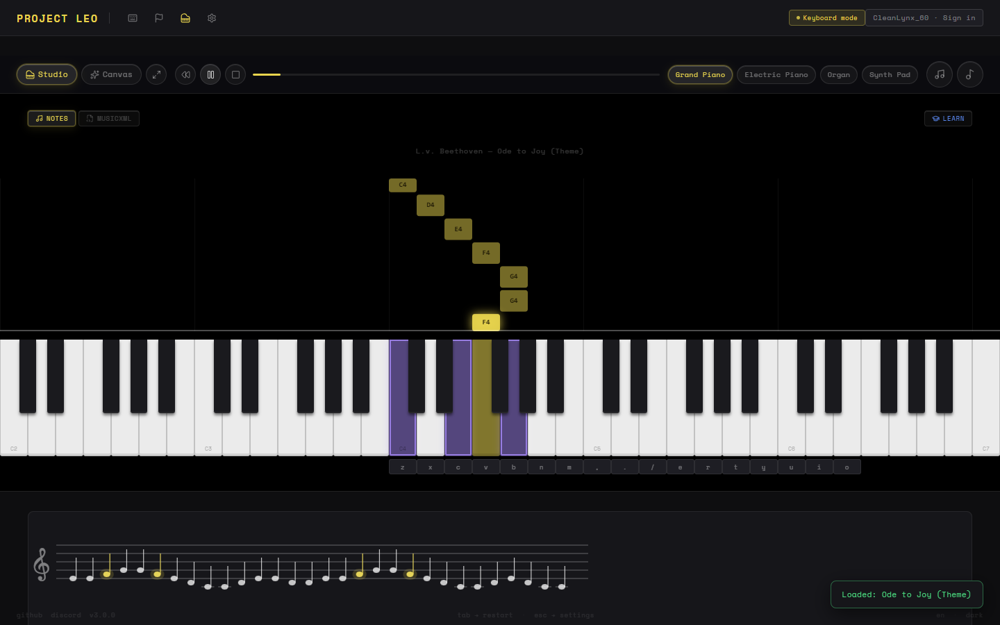
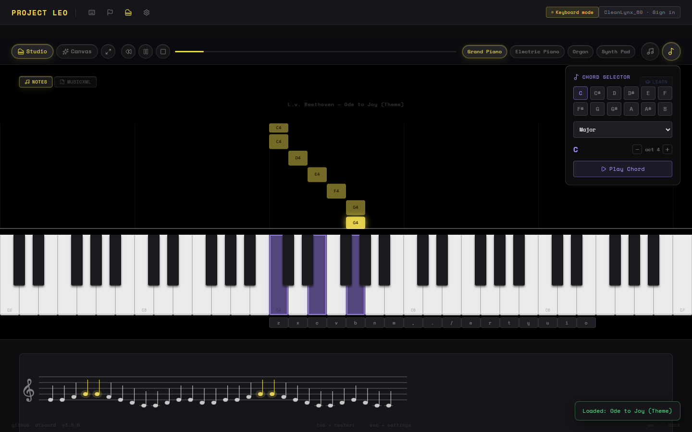

Four moments from a real run against a live backend: a typing test mid-run with live error correction, a four-player race with real Socket.io-relayed progress, and the MIDI piano studio showing both its falling-note notation and its chord selector.



